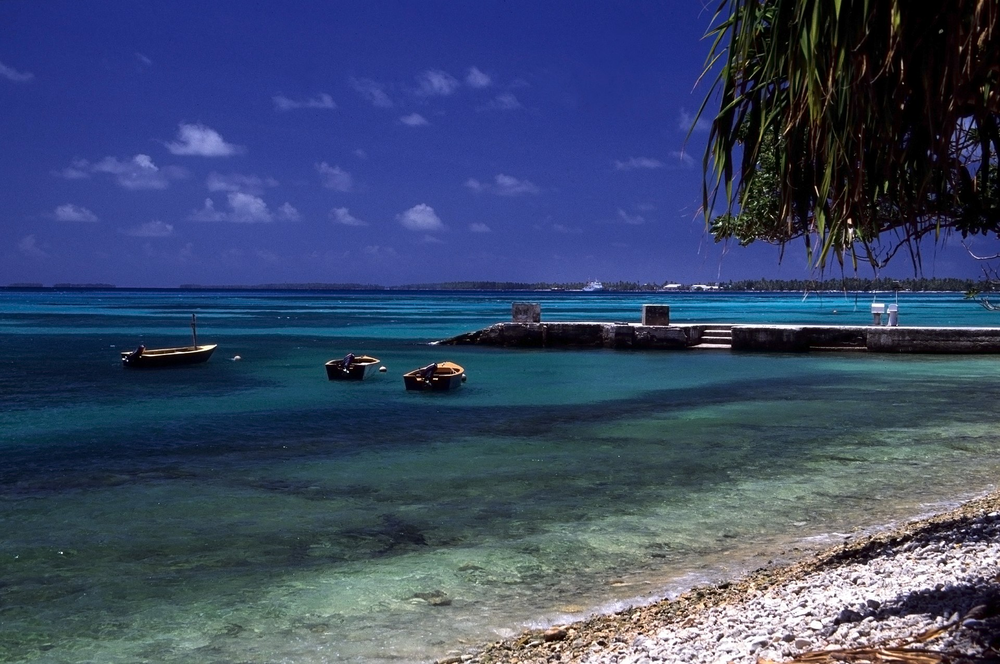

Tuvalu & Sea Level Rise
A country built two metres above the ocean decides what to do when the ocean starts winning.
Outcome (verbatim from the curriculum)
Evaluate the consequences of action and inaction as twenty-first century global citizens.


The Funafuti lagoon at high tide. Photo: Wikimedia Commons (CC).

Map of the South Pacific with Tuvalu circled. Photo: Wikimedia Commons (CC).
Nine tiny islands, two metres above the sea
9
coral islands (atolls)
26 km²
total land
~11,000
people
2 m
average height above sea
- Polynesian island nation in the South Pacific, halfway between Hawaii and Australia. Languages: Tuvaluan and English.
- Parliamentary democracy (elected parliament like Canada), alongside traditional island councils of elders (Falekaupule) who guide local community decisions.
- Income comes from foreign fishing licences, wages sent home by Tuvaluan sailors on international ships, foreign aid, and renting out its internet domain .tv to streaming companies.
Sea level rise: a global cause, a local crisis
- As the planet warms, ocean water expands and melting ice sheets add more water: global sea levels are rising about 3.4 mm per year.
- Wind and ocean currents push even more water into the Western Pacific, so seas around Tuvalu rise nearly twice as fast as the world average.
- Tuvalu's sea level has climbed roughly 15 cm in 30 years (about the height of a smartphone, huge on an island only 2 m high).
- By 2050, half of Funafuti (the main island where most Tuvaluans live) is projected to flood at high tide every single day.
- Saltwater is already seeping underground into freshwater wells and killing pulaka, a traditional taro-like root vegetable families rely on for food.

A low-lying Tuvalu shoreline. Photo: Wikimedia Commons (CC).